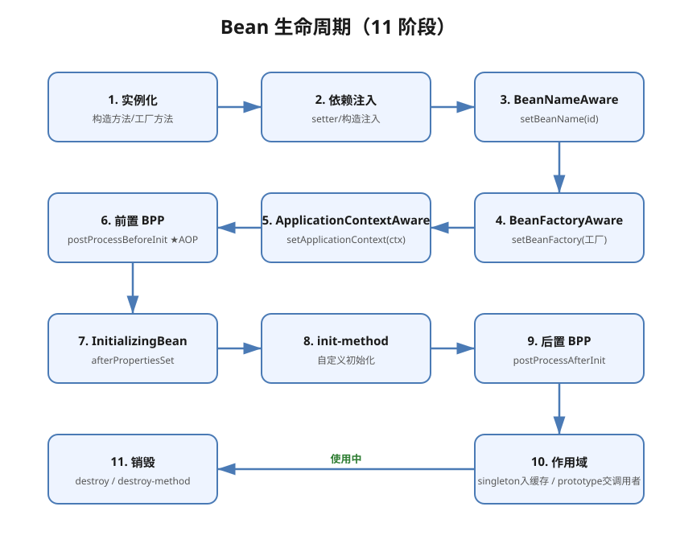

Spring核心·IoC与Bean生命周期详解¶
版本基线：Spring 5.x/6.x、Spring Boot 2.x/3.x
受众：Java 后端开发。假设已懂 Java 反射；需理解 IoC 容器如何接管对象创建。
前置知识：Java反射详解（反射 getAnnotation/newInstance，容器底层）、Java注解机制详解（@Component 注解扫描）
下一篇：03-SpringMVC执行流程详解（Web 层）；关联：07-Spring核心·AOP详解（代理）、09-Spring事务管理详解（事务）
📋 总纲¶
- IoC 与 DI：概念与为什么
- Bean 生命周期：实例化→注入→Aware→BPP→初始化→就绪→销毁（含 11 步蛇形图 + 详解）
- 三种装配方式：XML / 注解 / JavaConfig
- @Component 族与 @ComponentScan
- 依赖注入：@Autowired / @Qualifier / @Primary / @Resource
- 作用域 scope：singleton/prototype/request/session
- 循环依赖与三级缓存：每层缓存职责 + A↔B 完整流程
- @Value 与外部化配置
1. 学习目标¶
- 讲清 IoC 与 DI 的区别与关系
- 画出 Bean 生命周期完整链路（含 BeanPostProcessor 钩子）
- 用注解和 JavaConfig 两种方式装配 Bean
- 处理 @Autowired 多实现时的注入歧义
- 说清循环依赖为何能用三级缓存解决（构造器注入不行）
2. 前置知识¶
- Java反射详解：容器靠反射 newInstance + setField 完成创建与注入
- Java注解机制详解：@Component 是标记，Spring 扫描并注册为 Bean
3. 核心知识点¶
3.1 IoC 与 DI¶
是什么：IoC（Inversion of Control 控制反转）= 对象的创建和依赖关系的维护从程序代码反转给容器。DI（Dependency Injection 依赖注入）= 容器在创建对象时自动把依赖塞进来。
为什么（类比）：不用 IoC = 你自己开餐厅要买菜进货备料（new 到底）；用 IoC = 雇了个中央厨房（容器），你要啥菜打声招呼就送到（注入）。好处：解耦、对象统一管理、便于测试替换。
// 传统：手动 new，耦合
OrderService svc = new OrderService(new UserDao());
// Spring：容器注入，OrderService 只声明依赖
@Service
public class OrderService {
@Autowired private UserDao userDao; // 容器负责给
}
IoC vs DI：IoC 是理念（控制反转），DI 是实现手段（如何把依赖给进来）；IoC 还可通过其他方式实现（如 ServiceLocator），Spring 用 DI。
3.2 Bean 生命周期 ★¶
🖼 11 步蛇形图（图即知识，扫一眼看懂流程）：

生命周期 11 步详解¶
- 实例化：根据配置调用 Bean 的构造方法或工厂方法创建对象。
- 属性注入：利用依赖注入完成 Bean 中所有属性值的配置注入（setter / 构造注入，@Autowired 生效）。
- BeanNameAware：如果 Bean 实现了
BeanNameAware，Spring 调用setBeanName(id)传入当前 Bean 的 id 值。 - BeanFactoryAware：如果 Bean 实现了
BeanFactoryAware，Spring 调用setBeanFactory(工厂)传入当前工厂实例引用。 - ApplicationContextAware：如果 Bean 实现了
ApplicationContextAware，Spring 调用setApplicationContext(ctx)传入当前容器实例引用。 - 前置 BPP：如果
BeanPostProcessor和 Bean 关联，Spring 调用postProcessBeforeInitialization对 Bean 进行加工（★ AOP 代理在此介入）。 - InitializingBean：如果 Bean 实现了
InitializingBean，Spring 调用afterPropertiesSet()。 - init-method：如果配置文件中通过
init-method指定了初始化方法，则调用该方法。 - 后置 BPP：如果
BeanPostProcessor和 Bean 关联，Spring 调用postProcessAfterInitialization（AOP 代理在此生成）——此时 Bean 已可以被应用系统使用。 - 作用域：如果
scope="singleton"，则将该 Bean 放入 IoC 缓存池，触发 Spring 生命周期管理；如果scope="prototype"，则将该 Bean 交给调用者（Spring 不再管）。 - 销毁：如果 Bean 实现了
DisposableBean，Spring 调用destroy()；如果通过destroy-method指定了销毁方法，则调用该方法。
要点：
- 第 6、9 步是 BeanPostProcessor 的两次拦截，整个生命周期最重要的扩展点；AOP 代理在第 9 步（后置 BPP）生成。
- Aware 分两组：BeanName/BeanFactory 等直接 Aware 由 invokeAwareMethods() 直接调；ApplicationContext 族（含 ResourceLoaderAware 等）由 ApplicationContextAwareProcessor（一个 BPP）在第 6 步前置阶段调。
- @PostConstruct 的位置：由 InitDestroyAnnotationBeanPostProcessor 在第 6 步前置 BPP阶段触发（不是第 7 步 afterPropertiesSet）。
关键：AOP 动态代理正是在 BeanPostProcessor 的 postProcessAfterInitialization（第 9 步）阶段生成代理对象替换原 Bean（呼应 07-Spring核心·AOP详解）。所以 final 类无法被代理（无法生成子类）。
3.3 三种装配方式¶
| 方式 | 写法 | 适用 |
|---|---|---|
| XML | <bean class="..."/><property name=""/> |
老项目/第三方 bean |
| 注解 | @Component + @Autowired |
自研类，主流 |
| JavaConfig | @Configuration + @Bean |
第三方/条件装配 |
// JavaConfig：用 @Bean 装配（适合第三方库/不可加注解的类）
@Configuration
public class AppConfig {
@Bean
public DataSource dataSource() {
return new HikariDataSource(); // 返回对象注册为 Bean
}
}
@Bean vs @Component：@Bean 用在 @Configuration 类的方法上，返回对象注册为 Bean，适合外部库/复杂构造；@Component 标注在类上，适合自研类。
3.4 @Component 族与 @ComponentScan¶
@Component // 通用组件（最底层）
@Service // 业务服务层（语义化，功能等同 @Component）
@Repository // 数据访问层
@Controller // Web 控制器
@ComponentScan(basePackages="com.example") 扫描包下带 @Component 族注解的类注册为 Bean。@SpringBootApplication 自带 @ComponentScan（所在包及子包），见 springboot 域 01-SpringBoot启动原理与自动装配详解。
3.5 依赖注入注解¶
| 注解 | 特性 | 注意 |
|---|---|---|
@Autowired |
byType 注入 | 多个实现时报歧义 |
@Qualifier |
按 Bean 名精确指定 | 配 @Autowired 用 |
@Primary |
多实现时设默认 | 优先选中 |
@Resource |
JSR-250，byName 优先 | Java 标准 |
@RequiredArgsConstructor |
Lombok 构造器注入 | 推荐 final 字段构造器注入 |
@Service
public class OrderService {
private final UserDao userDao; // 推荐：final + 构造器注入
public OrderService(UserDao userDao) { this.userDao = userDao; }
@Autowired @Qualifier("mysqlUserDao") // 多实现用 Qualifier
private UserDao backup;
}
构造器注入 vs 字段注入：官方推荐构造器注入（final 不可变、易测试、防循环依赖死锁）；字段注入简洁但不利于测试。
3.6 作用域 scope¶
| 作用域 | 说明 | 场景 |
|---|---|---|
| singleton | 单例（默认） | 无状态服务 Bean |
| prototype | 每次获取新实例 | 有状态对象 |
| request | 一次 HTTP 请求一个 | Web |
| session | 一个会话一个 | Web |
| application | 整个 ServletContext | Web |
坑：单例 Bean 注入 prototype Bean 时，注入的是单例持有的同一实例——需用 ObjectProvider/代理 (@Scope(value=..., proxyMode=...)) 才能每次取新实例。
3.7 循环依赖与三级缓存¶
是什么（界定范围）：A 依赖 B、B 依赖 A。仅单例 + setter/字段注入的循环依赖，Spring 才用「提前暴露 + 三级缓存」解决；构造器注入无法解决（互相都要先实例化才能产物，形成死锁直接抛 BeanCurrentlyInCreationException）。
① 三级缓存：每层到底存什么、干嘛的¶
源码位置：DefaultSingletonBeanRegistry（org.springframework.beans.factory.support），本质就是三个 Map：
| 级别 | 字段名 | Map 类型 | 存的内容 | 生命周期阶段 | 一句话职责 |
|---|---|---|---|---|---|
| 一级 | singletonObjects |
ConcurrentHashMap |
成品 Bean（完整对象，应用实际拿到的） | 走完全部生命周期（含后置 BPP/AOP）后 | 最终容器，所有 Bean 的归宿 |
| 二级 | earlySingletonObjects |
HashMap |
半成品（早期引用，已实例化但未完成初始化） | 发生循环依赖时从三级拿工厂产物后放入 | 缓存已确定的具体半成品对象 |
| 三级 | singletonFactories |
HashMap |
ObjectFactory（lambda 工厂），不是对象 |
Bean 实例化后、属性注入前放入 | 延迟生成半成品，解决 AOP 代理 |
关键记忆：一级=成品，二级=半成品，三级=生产半成品的工厂（惰性）。
Spring 源码里三级缓存的值类型：
Map<String, Object>（一二三均为Object）为何能区分？靠的是查缓存顺序与存取阶段，不是靠类型。存储时按上述规则放，读取时先查一级没有才查二级、再查三级，顺序即层级。
② 为什么非要三级，两级、甚至一级不行吗？★¶
这是面试必追问，核心在两个问题：要不要分级？为什么没三级不行？
🔹 一级够吗？—— 不够，必须分级
只用一级缓存（成品+半成品混放）也在逻辑上能排出循环依赖，但会逼 Spring 用额外标记区分「完成/未完成」，创建过程变得复杂、易错。把成品与半成品物理分开（一级 vs 二级）各司其职，创建流程才简洁直观。所以「至少二级」是工程取舍。
🔹 两级够吗？—— 不引入 AOP 够，引入 AOP 不够，故必须三级★
不涉及 AOP 时，二级缓存（一+二）就已能解决循环依赖。但 Spring 的 AOP 代理在后置 BPP（第 9 步）才生成，而循环依赖 Bean 恰恰会在初始化完成前就索取引用——时机冲突：
- 若在实例化后立刻把对象固化进二级缓存：B 注入了 A 的原始对象，但 A 后面在被代理（后置 BPP 生成代理）后，B 手里仍是原始对象，代理就白做了（切面失效）。
- 所以三级存的是
ObjectFactory工厂（lambda）而非具体对象：把「拿到 A 引用」这件事延迟到 B 真正需要的那一刻，届时通过工厂调用getEarlyBeanReference()返回可能已被代理的正确对象。
一句话记忆：第三级 = 把「AOP 代理目标对象的确定」延迟到真被需要的瞬间。
关联 07-Spring核心·AOP详解：代理生成在第 9 步后置 BPP。三级缓存的意义正是与这一时机配合——早期引用不能把「还没决定是否被代理的对象」固定下来。
③ A↔B 完整解决流程（setter/字段注入）★¶
以两个 Service 互相注入为例，看 Bean 在三级缓存里的完整流转（③=工厂→②=半成品暂存→①=成品）：
📖 主导看图：下面 SVG 用「A/B 两个实体 + 底部三级缓存三框 + ①~⑥ 编号路径」讲清流转；灰色小字只是底层方法名，属补充说明。

①~⑥ 主流程（只看流转，先不管细节方法）：
- ① A 进三级：A 实例化完（仍是「半成品」，未注入/未初始化）→ 登记进 ③（A 工厂）。
- ② B 也进三级：A 填充属性需要 B → B 被创建，同样登记进 ③（B 工厂）。
- ③④ B 拿到 A 早期：B 填充属性需要 A → 查缓存 ①② 都无 → 命中 ③ 的 A 工厂 → 产出 A 的早期引用 → 暂存 ②。
- ⑤ B 完成：A 早期引用注入 B → B 完整 → B 升为① 成品。
- ⑥ A 完成：回 A，注入完整的 B → A 也完整 → 升为① 成品。（A 全程是同一实例，只是此刻才补全属性）
方法名补充（对应上面 ①~⑥，可配合 debugger 在
DefaultSingletonBeanRegistry.getSingleton打断点看）：addSingletonFactory实例化后登记工厂入③ → ③工厂调getObject/getEarlyBeanReference产出早期引用 → 早期引用写入earlySingletonObjects(②) 并移除③中该工厂 → 完成后写入singletonObjects(①)。构造器注入无法用这套（必须先产完整对象），见 ④ 场景矩阵。
流程口诀：实例化→提前暴露三级→需要时升到二级→完成的进一级。核心就一个动作——提前暴露：实例化完还没初始化，就把引用交出去，等被依赖方完整后回填。
④ 什么场景能解 / 不能解（组合矩阵）¶
| 场景 | 能否解决 | 原因 |
|---|---|---|
| 单例 + 字段/setter 注入 | ✅ | 三级缓存提前暴露半成品，可回填 |
| 单例 + 构造器注入 | ❌ 直接抛异常 | 构造器必须先产完整对象，无法提前暴露 |
| prototype 循环依赖 | ❌ | 每次都要新实例，无从缓存 |
@Async、事务等自动代理 Bean（注入的是代理处理者） |
⚠️ 部分 | 早期引用可能与代理阶段错位，多出复杂场景 |
| SpringBoot 2.6+ | ❌ 默认禁止 | spring.main.allow-circular-references=false |
⑤ 追问（面试加分）¶
- 为什么单例 AOP Bean 循环依赖可能还是报错？—— 早期暴露提前生成了代理，但代理切面可能要等完整初化后才就位，部分
@Async/事务场景即使有三级缓存仍会BeanCurrentlyInCreationException。 - 第三级工厂返回的是什么？——
getEarlyBeanReference()的结果：无 AOP 就返回原始对象，有 AOP 则返回（包装了SmartInstantiationAwareBeanPostprocessor）代理对象；未命中则回退原始。 - 一级为何用
ConcurrentHashMap，二三级用HashMap？—— 一级是并发读取安全瓶颈，用并发容器；二三级只在单线程创建流程内顺序访问。
⚠️ SpringBoot 默认禁止循环依赖（Boot 2.6+ 默认
spring.main.allow-circular-references=false）。最佳实践是避免循环依赖，靠三层调用拆解，而非依赖三级缓存。面试讲「三级缓存解决循环依赖」是 Spring 框架层的机制，讲完要点名：新项目别制造循环依赖。
3.8 @Value 与外部化配置¶
@Value("${app.name}") // 从配置读取，占位符
@Value("${app.timeout:5000}") // 带默认值
@Value("#{config.retry}") // SpEL 求值
外部化配置优先级、@ConfigurationProperties 结构化绑定见 springboot 域 02-SpringBoot配置体系与外部化配置详解。
4. 最佳实践¶
- 构造器注入优先（final 字段 + Lombok），少用字段注入
- 避免循环依赖，Boot 默认已禁止
- 无状态 Bean 用 singleton；有状态/不安全的才考虑 prototype
- @Primary 定义默认实现，@Qualifier 显式选实现
- 第三方库用 @Bean，自研类用 @Component 族
5. 常见踩坑¶
- 循环依赖：构造器注入直接报错，字段注入 Boot 默认也禁止 → 重构分层
- 多实现歧义：两个同类型 Bean 不配 @Primary/@Qualifier → NoUniqueBeanDefinitionException
- 单例注入 prototype 失效：注入的是单例持有的固定实例
- final 类：AOP 代理不了（无法生成子类），见 07-Spring核心·AOP详解
- @Bean 方法里 new 的对象：未被容器管理，无生命周期回调，须返回类型声明才被识别
6. 小结¶
- IoC = 控制反转理念，DI = 注入实现；Spring 容器管对象创建与依赖。
- Bean 生命周期 11 步：实例化→属性注入→3个Aware→前置BPP(★AOP)→InitializingBean→init-method→后置BPP→作用域→销毁；AOP 代理在第 9 步后置 BPP 生成。
- 装配三方式：XML/注解/JavaConfig；自研 @Component，第三方 @Bean。
- 作用域默认 singleton；多实现用 @Primary/@Qualifier。
- 循环依赖靠三级缓存（框架层），但新项目应避免；Boot 默认禁止。
7. 关联笔记¶
- 上一篇：00-Spring三件套体系总览·Spring与SpringMVC与SpringBoot
- 下一篇：02-Spring核心·IoC与Bean生命周期实践（本知识点的代码/配置实盀）
- 07-Spring核心·AOP详解：代理在 BeanPostProcessor 后置阶段生成
- 09-Spring事务管理详解：事务切面代理
- 11-SpEL表达式详解：@Value SpEL 取参
- springboot 域 01-SpringBoot启动原理与自动装配详解：Boot 如何扫描装配
8. 参考资料¶
- Spring 官方文档：Core（IoC 容器），查询日期 2026-08-11
- [Spring Bean 生命周期详解（社区）]，查询日期 2026-08-11